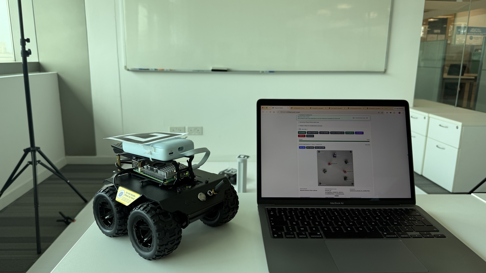

// RECHERCHE INTERNATIONALE · SINGAPOUR
Optimisation de trajectoires pour drones autonomes
Stage de recherche de trois mois à CNRS@CREATE, à Singapour (juin–août 2026), en collaboration avec le laboratoire PIMM à Paris, dans un environnement de recherche international de haut niveau. Développement en équipe de méthodes d’optimisation de trajectoires et d’évitement des collisions, avec des applications au guidage de drones autonomes. La chaîne perception–guidage–commande a été validée expérimentalement sur des rovers, en comparant simulations et essais.
J’ai contribué à la rédaction d’un article scientifique en tant que co-auteur, présentant les méthodes développées et leur validation expérimentale. L’article a été soumis au Journal of Control, Automation and Electrical Systems et est en cours d’évaluation.
// OUTILS ET COMPOSANTS
Découvrir le projet de recherche
 PIMM · Paris
PIMM · Paris
CNRS@CREATE · Singapour
PIMM · ParisCNRS@CREATE · Singapour